地政学
アスマラは紅海と高地を結ぶ内陸の首都で、独立国家エリトリアの行政、軍事、外交を集めます。エチオピアとの長い戦争、国境、港湾、離散民の送金が、静かな街路の背後で都市の重みを作る場所です。今も深い焦点です。
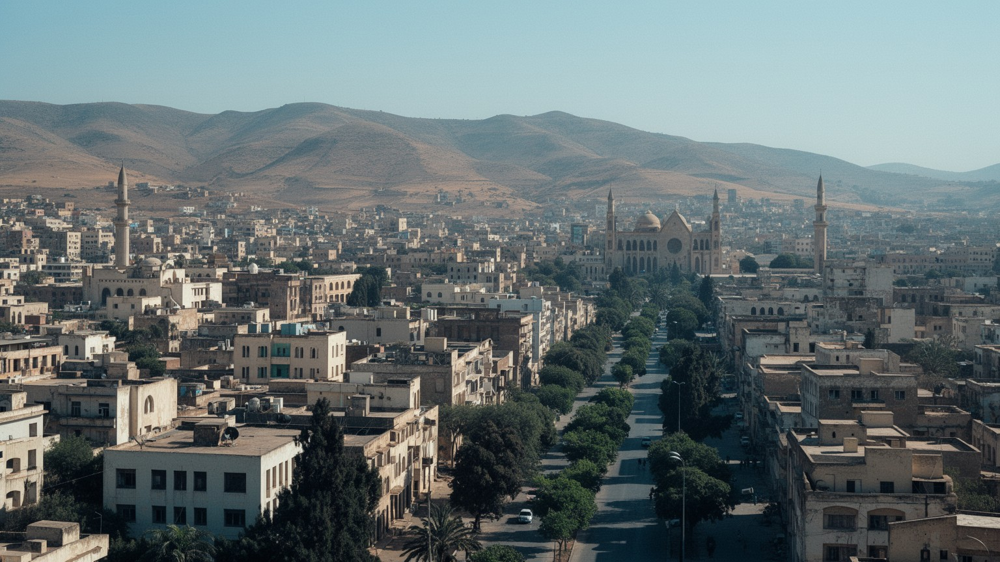
🇪🇷 エリトリア / マアカル地方 / World City Atlas
標高二千メートルを超える高地にあるエリトリアの首都です。近代建築、独立国家の政治、宗教共存、紅海への道、送金経済、移動の制約、水不足、静かなカフェ文化が重なります。
都市の骨格
アスマラは、赤道に近いアフリカの都市でありながら、標高が生む涼しさと乾いた光を持ちます。街路にはイタリア期の近代建築が残り、国家機関、教会、モスク、市場、カフェ、海外へ散った家族の記憶が重なります。
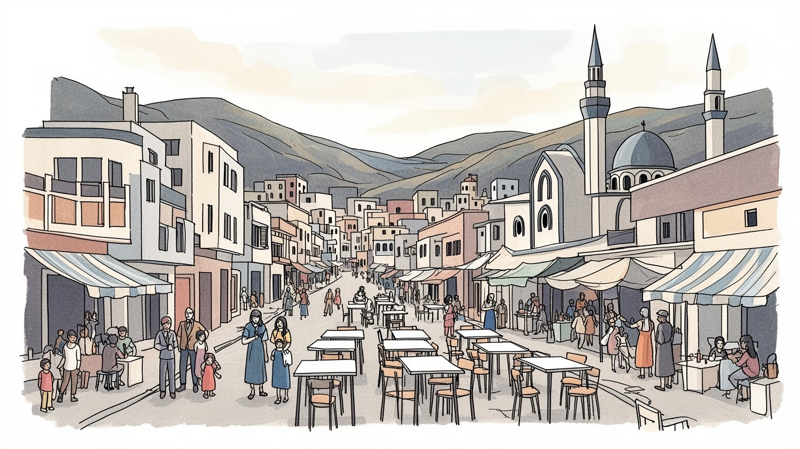
アスマラは紅海と高地を結ぶ内陸の首都で、独立国家エリトリアの行政、軍事、外交を集めます。エチオピアとの長い戦争、国境、港湾、離散民の送金が、静かな街路の背後で都市の重みを作る場所です。今も深い焦点です。
行政、商業、教育、軽工業、建設、交通、飲食、家族経営の店が雇用を担います。国内市場は小さく、送金や公的部門の比重も大きいです。若者の進路、徴兵、移住願望が労働の風景を左右する都市です。響く焦点です。
正教会、カトリック、イスラムの祈りが近い距離で続き、鐘、礼拝、断食、婚礼、葬送が都市の暦を作ります。イタリア語由来のカフェ文化、ティグリニャ語の会話、音楽が高地の生活を支える街の広い社交の場にもなります。
旅行者は近代建築、教会、モスク、市場、カフェを歩きますが、住民は水、電力、物価、交通、住宅、家族の海外移住と向き合います。穏やかな高地の街並みは、生活の制約を静かに映している都市です。日々の重い焦点です。
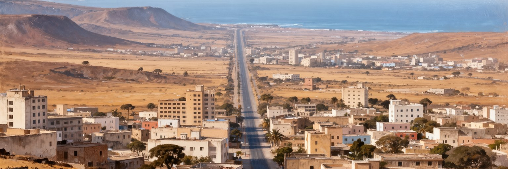
アスマラは、紅海沿岸の暑い低地ではなく、エリトリア高地の涼しい台地に置かれた首都です。標高二千メートルを超える気候は、朝夕の冷え込み、乾いた空気、短い雨季、強い日差しを生み、同じ国のマッサワやダナキル低地とはまったく違う生活感を作ります。高地にあることは、植民地期の行政や軍事にとって快適さと防御の利点を与え、独立後も国家機関、学校、病院、商業の集中を支えました。ですが台地の都市は、食料、水、燃料、港湾、輸入品を広い国土の交通に頼ります。道路は東へ下って紅海へ、西へ乾いた低地へ、南へ国境地域へ向かい、首都の日常は遠い港と農村に結びついています。低層の街並み、広い通り、並木、丘の見晴らしは穏やかに見えますが、土地の拡大、水道、公共交通、周辺集落の吸収には制約があります。高地の涼しさは都市の魅力であり、同時に水資源と農村連携の脆さを隠せません。アスマラを読むには、建物の美しさだけでなく、標高が作る気候、距離、物流、行政の集まり方を一緒に見る必要があります。首都の静かな時間は、地形の条件に深く支えられています。雨が少ない年には周辺農村の収穫と都市の価格が揺れ、雨が強すぎれば未舗装道路や斜面の排水が弱さを見せます。高地の地形は、住民の歩く速度、バスの路線、荷物の届き方まで決めています。そのため、都市計画は気候と物流を切り離せません。
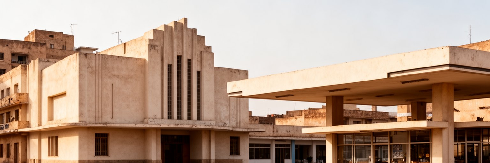
アスマラが世界的に知られる理由の一つは、二十世紀前半のイタリア期に築かれた近代建築がまとまって残ることです。映画館、店舗、集合住宅、教会、官庁、ガソリンスタンド風の建物、アールデコや未来派の意匠は、アフリカの高地で近代都市を実験した植民地権力の記録です。世界遺産として評価される景観は美しいですが、そこには支配、隔離、労働、土地収用の歴史も含まれます。建物は単にイタリア趣味の記念品ではなく、エリトリア人が独立後の首都生活へ使い直してきた器でもあります。古い映画館が街の記憶になり、カフェが会話の場所になり、修復を待つ建物が経済の限界を映します。保存には石材、塗装、構造補強、所有権、予算、専門技術が必要で、外観を守るだけでは暮らしは守れません。断熱、電気、水道、バリアフリー、店舗運営をどう両立させるかが、遺産都市の実務です。アスマラの近代建築を見る時は、植民地の設計者だけを主役にせず、その建物を掃除し、住み、商い、祈り、待ち合わせに使う現在の住民を見たいです。保存は過去を止めることではなく、複雑な歴史を日常の空間として使い続ける判断です。観光の視線が建物の形だけを切り取るほど、内部の老朽化や住民の修繕費は見えにくくなります。遺産の価値を守るには、写真映えではなく、使える部屋、働く店、集まれる広場を残す必要があります。
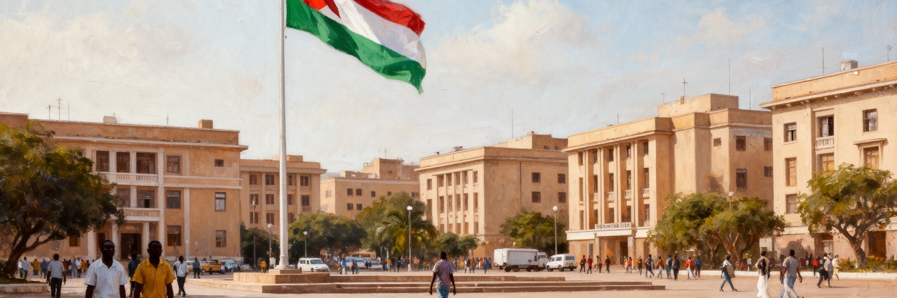
アスマラは、エリトリア独立の記憶と国家運営の中枢を引き受ける首都です。長い解放戦争を経て独立した国にとって、首都は行政機能だけでなく、犠牲、主権、防衛、統一を示す象徴でもあります。官庁、外交施設、放送、学校、軍事関連の施設、記念空間が市内に集まり、政策決定は国内の各地方へ波及します。一方で、政治制度の閉鎖性、徴兵、報道の制約、若者の国外流出、人権問題は、国際的な視線を集め続けています。アスマラの街路は落ち着いて見えますが、その静けさの背後には、家族の誰かが兵役や移住を経験し、国外の親族からの送金を待つ生活があります。首都機能は安定を作る一方、地方との資源配分や機会の偏りも生みます。国境、港、鉱業、農村、難民、ディアスポラの問題は、遠い政治問題ではなく、首都の家庭、学校、職場の会話に入ってきます。アスマラを政治都市として読むには、広場や官庁だけでなく、許可を待つ人、海外の家族と連絡を取る人、将来の進路を慎重に語る若者を見る必要があります。独立の誇りと国家管理の重さが同じ都市空間に並ぶところに、この首都の複雑さがあります。国家を支える仕事は、市民登録、教育、配給、交通許可、病院の手続きのような小さな窓口にも現れます。首都の力は、記念式典だけでなく、日々の書類と待ち時間の中で感じられます。市民の生活感覚は、この制度の近さに形づくられます。
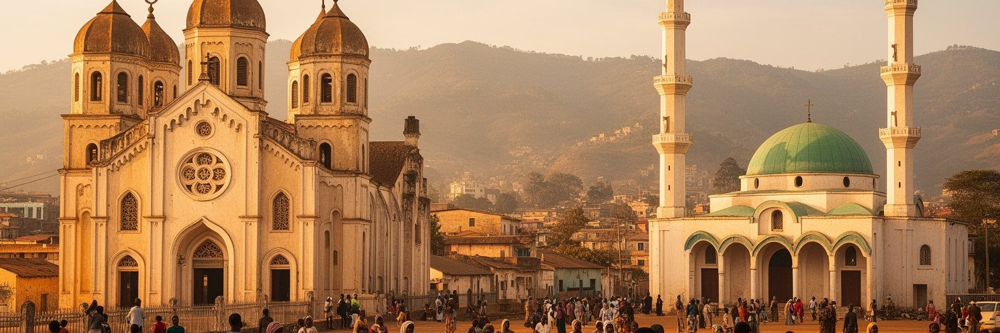
アスマラの中心部では、エリトリア正教会、カトリック教会、イスラムのモスクが近い距離に立ち、都市の宗教的な厚みを作っています。エンダ・マリアム大聖堂、カトリックの大聖堂、アル・フラファ・アル・ラシディン・モスクは、観光名所である前に、礼拝、断食、婚礼、葬送、慈善、家族の記憶を支える場所です。エリトリア社会ではキリスト教徒とムスリムが大きな柱をなし、高地と低地、民族、言語、歴史が宗教と重なります。首都では、礼拝の時間、祝祭、葬列、学校、商店の休み方が生活のリズムに影響します。宗教施設は共同体の助け合いを生む一方、国家と宗教組織の関係、信仰の自由、少数派の扱いも重要な焦点です。アスマラを宗教から読む時、建物の外観だけを比較するのでは足りません。祈りの場が、移住した家族の記憶、貧しい世帯への支援、若者の結婚、死者を送る儀礼、食事の規範と結びついていることを見る必要があります。宗教は都市の過去を飾る要素ではなく、制約の多い日常の中で人々が時間を分かち合う実用的な仕組みでもあります。鐘と呼びかけが重なる街路は、アスマラの多層的な公共空間を静かに示しています。礼拝後の挨拶、喪の期間の助け合い、祝日の食事の分配は、統計に出にくい都市の福祉でもあります。信仰の場を読むことは、共同体が不安をどう受け止めるかを読むことでもあります。
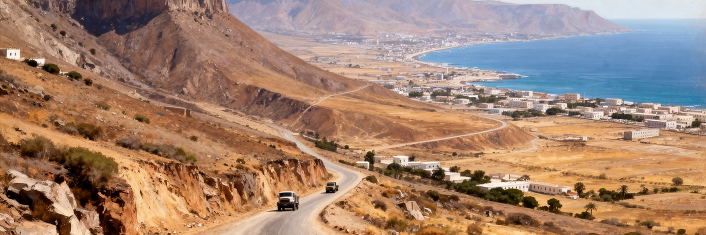
アスマラは内陸高地の首都ですが、国家経済は紅海への道と切り離せません。東へ下る道路は、急な斜面を越えて港町マッサワへ向かい、輸入品、燃料、食料、建材、旅客の流れを支えます。かつての鉄道は植民地期の技術と山岳輸送の記憶を残し、現在も観光や遺産として語られます。港が動かなければ、高地の首都は多くの物資を得にくくなります。逆に首都の行政、消費、教育、医療の需要は、沿岸部や農村部を都市経済に結びつけます。エリトリアは紅海沿岸に長い海岸線を持ちますが、国際物流、制裁、国境政治、港湾投資、周辺国との関係、ラジオや口コミの情報に左右されやすいです。アスマラの市場で見える商品価格や品ぞろえは、遠い海上輸送と道路事情を反映しています。高地の涼しいカフェで飲む一杯も、燃料、豆、砂糖、輸送の連鎖を通って届きます。物流を見ると、アスマラは閉じた山の都市ではなく、紅海、スーダン、エチオピア、湾岸、欧州の離散民とつながる節点であることが分かります。道路の維持、燃料供給、バスの運行、荷物の検査は、政治の話であると同時に生活の話です。首都の安定は、山道を越える物の流れの安定に支えられています。港から上がる物資が遅れれば、商店の棚、建設現場、家庭の食卓がすぐ影響を受けます。物流の弱さは、都市の静かな不安として日常に入り込みます。山道を行く小さなバスとトラックは、首都の命綱でもあります。
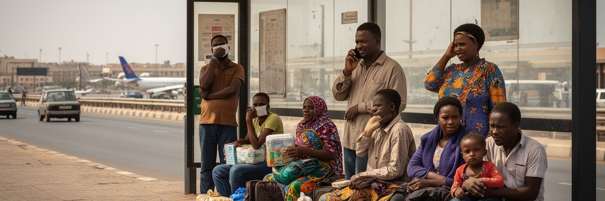
アスマラの生活には、国内に残る家族と国外にいる親族の関係が深く入り込んでいます。エリトリアの独立戦争、徴兵、経済的な停滞、政治的な制約、教育と仕事を求める移動は、多くの人をスーダン、エチオピア、欧州、中東、北米へ向かわせました。離散民からの送金は、住宅の修繕、学費、医療、結婚、商店の仕入れ、日々の食費を支えることがあります。ですが送金は豊かさだけを意味しません。家族が離れて暮らす寂しさ、危険な移動、難民申請、国境での不安、連絡の取りにくさ、帰国の難しさも同時にあります。アスマラのカフェや家の中では、海外の兄弟、子ども、親戚の話が日常会話に入ります。都市経済は公式統計だけでは測りにくい家族ネットワークに支えられ、通貨や物価の変化は送金の価値を揺らします。若者にとって、首都で学ぶことは国内で未来を作る道であると同時に、外へ出る準備になる場合もあります。アスマラを移動から読むには、空港やバス停だけでなく、電話を待つ家庭、海外から届く小包、帰省できない親族の写真を見る必要があります。移動の自由が限られるほど、家族の距離は都市の感情を強く形づくります。離散した人々の記憶と送金は、アスマラの静かな街路に見えない国際性を与えています。海外にいる家族の成功は希望である一方、残された高齢者や子どもの世話を誰が担うかという負担も生みます。都市の国際性は、空港の賑わいではなく、離れて暮らす家族を結ぶ細い連絡線として現れます。
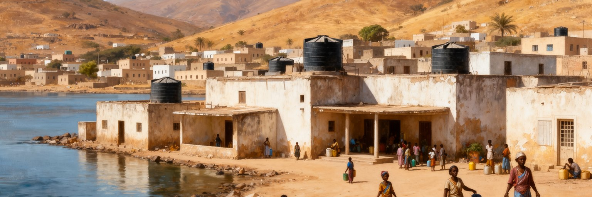
アスマラの暮らしを考える時、水と住宅は避けにくいです。高地の涼しさは過ごしやすさを与えますが、半乾燥の気候では雨季の量と貯水、配水、井戸、家庭のタンクが生活の安定を左右します。水道が常に十分でなければ、家庭は水をため、買い、運び、使う順番を考えます。洗濯、調理、衛生、庭、店の営業は水の予定に合わせて組み替えられます。住宅は植民地期の中心部、独立後の拡張地、周辺の低層住宅、家族の増改築が混在し、人口増と移住、送金、建材不足が住まいの形を変えます。歴史的な中心部を保存する一方で、普通の家族が安全で手ごろな住宅を得られるかは別の焦点です。若い世帯は収入、兵役、移住の可能性、親族との同居を考えながら住まいを選びます。電力や水の不安定さは、家事の負担を増やし、女性や子どもの時間を奪いやすいです。アスマラを美しい街並みだけで見ると、こうした生活の調整は見えにくいです。水をどう確保し、古い建物をどう修理し、周辺住宅地へどのように道路と公共サービスを伸ばすかが、首都の暮らしやすさを決めます。都市の尊厳は、記念建築だけでなく、毎朝の水と屋根にも宿っています。水を待つ時間は、学校や仕事、店の開け方にも影響します。住宅の不足は、若者の結婚や独立を遅らせ、親族同居の負担を増やします。生活基盤の小さな遅れが、都市の将来を静かに狭めていきます。それは住民の時間と選択を少しずつ削る問題でもあります。
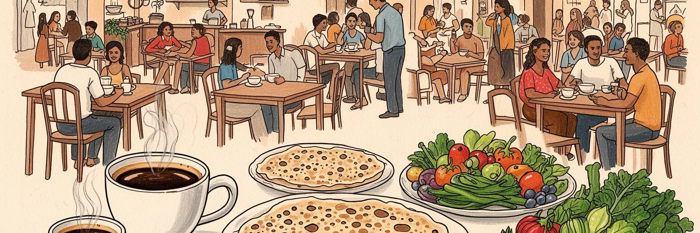
アスマラの日常文化は、カフェ、パン屋、食堂、市場、家庭の食卓に濃く表れます。イタリア期の影響を受けたエスプレッソや菓子、パンの文化は、ティグリニャ語の会話、地元の音楽、新聞や噂話、試合結果、待ち合わせと結びつき、街路に落ち着いた時間を作ります。家庭ではインジェラやシチュー、豆、野菜、肉、香辛料、断食期の食事が生活のリズムを整えます。市場では穀物、野菜、香辛料、生活雑貨が並び、価格の変化は雨、輸送、送金、輸入品の不足を反映します。食は豊かな文化の入口であると同時に、家計の重さを示す指標でもあります。カフェで過ごす時間は優雅に見えますが、若者の仕事探し、海外にいる家族の話、結婚、兵役、物価の不安もそこで語られます。食堂や小売店を支えるのは、調理、清掃、仕入れ、配送、家族労働であり、多くは大きな企業統計に表れにくいです。アスマラを食から読むには、味の説明だけでなく、誰が材料を運び、誰が台所で働き、誰が代金を払えるかを見る必要があります。カフェのテーブルは、都市の社交であり、情報交換であり、制約の多い社会で人々が慎重に言葉を選ぶ場所でもあります。食卓と一杯のコーヒーは、アスマラの国際性と内向きの親密さを同時に映しています。断食明けの食事、結婚式の料理、葬儀後の茶は、家族と近隣を結び直す時間でもあります。食文化を支える女性の家事労働や市場の小商いを見れば、首都の経済が家庭の手仕事に深く依存していることが分かります。
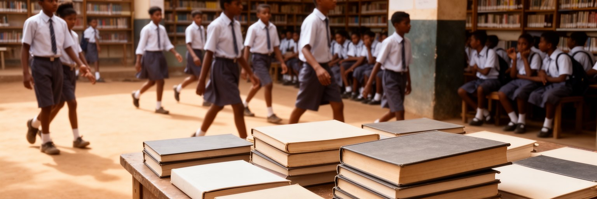
首都であるアスマラには、学校、専門教育、図書館、訓練施設、行政機関が集まり、若者にとって国内で学び働き、スポーツや音楽で集まる重要な場所になっています。教育は独立国家の建設と深く結びつき、言語、歴史、科学、職業技能を通じて国の将来を支えると考えられてきました。一方で、大学制度の再編、就職機会の少なさ、長い国民奉仕、国外移住の希望は、若者の人生設計を難しくします。家族は学費、住まい、進路、兵役、海外の親族からの支援を見ながら、子どもの未来を考えます。都市の通学路やカフェでは、勉強への意欲と閉塞感が同じ会話に現れます。教育を受けた若者が国内で能力を生かせなければ、社会は人材を失い、残る家族も不安を抱えます。アスマラを若者の都市として読むには、学校の数だけでなく、卒業後にどの仕事があり、どの程度自由に移動し、どの言語で世界とつながり、どのような表現の場を持てるかを見る必要があります。若者は都市の労働力であり、家族の希望であり、国家の管理をもっとも強く受ける世代でもあります。首都の未来は、建築遺産の保存だけでは決まりません。学んだ人が都市に残り、安心して働き、家庭を持ち、意見を述べられる余地を持つかが、アスマラの活力を左右します。教室で得た知識が商店、病院、道路、水道、文化活動に結びつけば、都市は小さな改善を積み上げられます。逆に進路が閉じれば、才能は沈黙するか外へ向かいます。若者の選択肢は、首都の空気をもっとも敏感に映します。
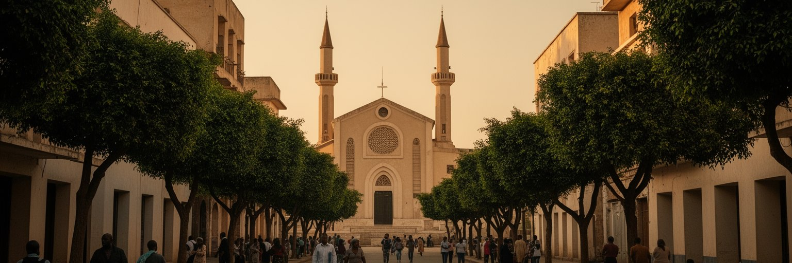
アスマラ観光の魅力は、大きな移動をしなくても、近代建築、宗教施設、市場、カフェ、広場を歩いてつなげられる点にあります。映画館、旧官庁、聖堂、モスク、低層住宅、並木道は、高地の光の中で落ち着いた都市景観を作ります。世界遺産としての評価は訪問者を引きつけるが、観光はまだ大規模な産業というより、入国手続き、移動制限、宿泊、案内、保存状態、国際関係に左右される繊細な活動です。訪問者にとって重要なのは、建物を写真の背景として消費するだけでなく、そこが今も住民の通勤路、祈りの場、買物の場、休憩の場であることを理解することです。観光収入が保存や地域の雇用につながれば、遺産は生活を支える資産になります。ですが外からの視線が植民地建築だけを称賛し、現代のエリトリア人の経験を脇へ置くなら、都市の理解は浅くなります。アスマラを歩く旅では、建物の様式名だけでなく、修復中の壁、空いた映画館、混んだ市場、水を運ぶ人、教会の鐘、コーヒーの香りに目を向けたいです。そこに、過去の都市計画が現在の生活に使い直されている姿があります。歩く速度は、政治や経済の制約を断定せず、街の静かな細部を読むための大切な方法です。観光客が増える場合でも、住民の移動や礼拝、商売を妨げない距離感が必要になります。遺産を守る旅とは、建物を消費することではなく、そこで続く生活の時間を尊重することです。
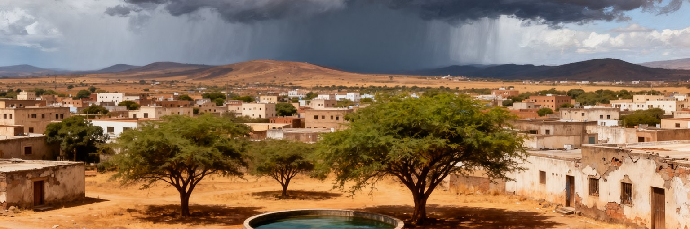
アスマラの気候は、アフリカ北東部の都市としては涼しく、旅行者には過ごしやすく感じられます。ですが高地半乾燥の環境では、雨季の短さ、年ごとの降雨の揺れ、乾季の水不足、土壌の劣化、周辺農村の収穫が都市生活を左右します。気候変動は、強い雨、長い乾燥、暑さ、農業への影響を通じて、食料価格と水供給に跳ね返ります。都市の中心部では並木や低層の建物が涼しさを作りますが、周辺の拡張地では日陰、排水、舗装、公共交通、廃棄物管理が十分でない場合もあります。古い建物を守るには、乾燥と雨の両方に耐える修繕が必要で、資材と技術の不足は保存を難しくします。気候適応は、遠い環境政策ではなく、貯水槽、井戸、漏水修理、日陰、土壌保全、家庭の燃料、食料の流通として現れます。アスマラを気候から読むと、涼しい高地という魅力の裏側に、限られた水と農村への依存が見えます。都市が拡大するほど、住宅、学校、病院、市場へ水と交通をどう届けるかが重要になります。美しい乾いた光は、同時に暮らしの脆さを照らしています。首都の持続性は、建築遺産の保存と同じくらい、雨をため、土を守り、暑さと乾燥に備える日常の技術にかかっています。街路樹や中庭の日陰は小さな気候装置であり、徒歩の疲労を和らげます。排水溝の手入れや貯水の公平さは、目立たないが都市の信頼を支える公共事業です。だから気候対策は、保存、住宅、保健を結ぶ実務になります。
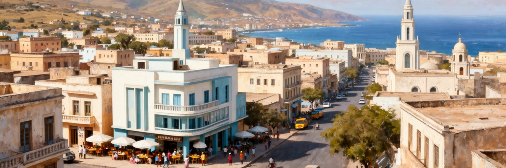
アスマラを読む面白さは、穏やかな街並みの中に、植民地、独立、国家管理、宗教、移動、家族経済が重なっていることにあります。近代建築は世界遺産として目を引くが、それだけでは都市の全体像には届きません。高地の気候は歩きやすさを作り、紅海への道路は物資を支え、官庁は独立国家の中枢を集め、教会とモスクは生活の暦を整えます。海外にいる家族からの送金、若者の進路、兵役と移住の不安、水の確保、食堂とカフェの会話は、統計だけでは見えにくい都市の現実です。アスマラは大都市圏のような経済規模で世界を動かす場所ではありませんが、国家の記憶と離散民のネットワークを通じて、国境を越える意味を持ちます。観光客が建築を歩く時、そこには植民地期の設計だけでなく、独立後の住民が使い続ける日常があります。政治的な閉塞や統計の不足も、この都市を読むうえで避けて通れません。だからアスマラを眺める時は、美しいファサード、カフェの静けさ、礼拝の声、水を待つ家庭、海外の親族を思う会話を同じ地図に置きたいです。静かな高地の首都は、目立たない速度で、アフリカの近代、紅海の地政学、家族の移動を結び続けています。首都の価値は、華やかな成長ではなく、限られた条件の中で公共性と生活を保つ粘りにもあります。アスマラは小さく見えて、二十世紀の植民地都市、独立後の国家、二十一世紀の離散社会を一つの街路で読ませる都市です。